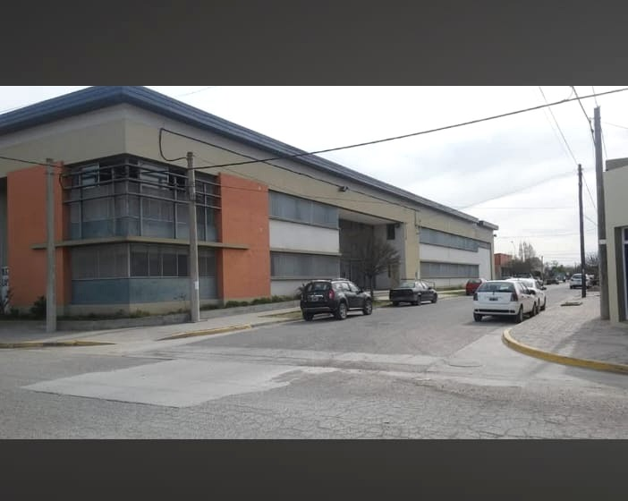
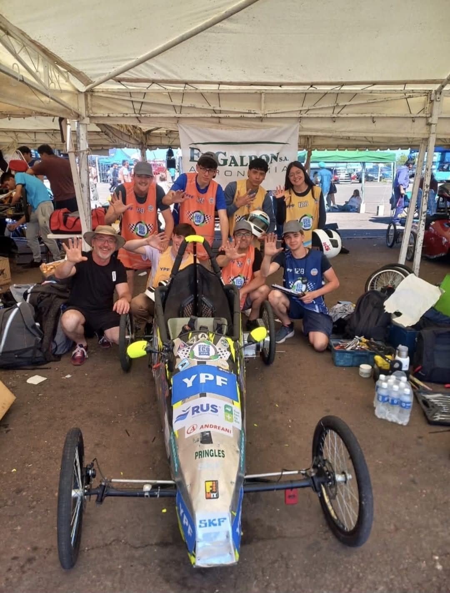

Nace la Escuela Técnica
Fundación el 25 de marzo; apertura de una segunda división y creación de la Asociación Cooperadora.
Educación Técnica Pública
Escuela de Educación Secundaria Técnica N.º 1 de Coronel Pringles. Formación, innovación, trabajo y compromiso con nuestra comunidad.
Nuestra escuela
En la E.E.S.T. N.º 1 combinamos formación general, conocimientos científicos y tecnológicos, trabajo en taller y desarrollo de proyectos.
Nuestra propuesta busca que los estudiantes aprendan haciendo, resolviendo problemas reales y desarrollando capacidades para continuar estudiando, trabajar y participar activamente en la sociedad.

Desde 1987
La Escuela Nacional de Educación Técnica N.º 1 de Coronel Pringles fue creada el 25 de marzo de 1987 mediante la Resolución N.º 1280 del 23 de febrero de ese año. Sus primeras clases se desarrollaron en una casa cedida por el Municipio, ubicada en avenida 25 de Mayo y calle 21, con una división de primer año del Ciclo Básico diurno. La demanda fue tal que el 23 de abril se abrió una segunda división.
Bajo la conducción inicial de Hugo Victorio Mancinelli, con el acompañamiento de las familias y la primera Asociación Cooperadora, constituida el 20 de mayo de 1987, comenzó a crecer una comunidad educativa comprometida con la formación técnica. Desde junio de 1988, el ingeniero José María Salom continuó esa tarea.
Fundación el 25 de marzo; apertura de una segunda división y creación de la Asociación Cooperadora.
El Mercado Municipal es cedido para el funcionamiento de la escuela. José María Salom asume la dirección el 14 de junio.
Tras una consulta a instituciones y sectores de la comunidad en 1989, se crea la primera división el 10 de abril de 1990.
La institución pasa a depender de la Provincia de Buenos Aires. En 1996 se crea la modalidad Tecnología de Alimentos y en 1997 comienza la articulación con las E.G.B. N.º 2 y N.º 11.
Se constituye una Comisión Pro-edificio para impulsar la construcción de una sede acorde con las necesidades de la escuela.
En marzo comienza el ciclo lectivo en la nueva sede, ubicada en Cabrera y Brown, tras años de trabajo de la comunidad educativa.
Se incorpora la orientación de Técnico en Energías Renovables, ampliando la propuesta formativa hacia las tecnologías sustentables.
Cristian Bertoli asume la dirección el 14 de febrero, inicialmente en carácter suplente, y pasa a provisional el 1 de julio.
Desde sus primeros espacios hasta su edificio actual, la escuela creció gracias al compromiso de estudiantes, docentes, auxiliares, familias, cooperadora y toda la comunidad de Coronel Pringles.
Nuestra oferta educativa
La formación técnica integra saberes teóricos, prácticas de taller, laboratorio, proyectos y experiencias vinculadas con el mundo productivo.
Desde 1987
Formación en sistemas eléctricos y mecánicos, máquinas, instalaciones, automatización, mantenimiento, diseño y procesos industriales.
Desde 1996
Formación en elaboración, control, análisis, conservación y calidad de alimentos, con prácticas de laboratorio y procesos productivos.
Desde 2017
Formación orientada al aprovechamiento de fuentes renovables, eficiencia energética, tecnologías sustentables e instalaciones.
Protagonismo estudiantil

Estudiantes y docentes trabajan en equipo en el diseño, construcción, mejora y puesta a punto de un vehículo eléctrico de competición.
El proyecto integra mecánica, electricidad, energías renovables, diseño, organización, seguridad, comunicación y trabajo colaborativo.
Investigaciones, ensayos, experiencias y proyectos desarrollados en las distintas tecnicaturas.
Trabajos de diseño, fabricación, montaje, mantenimiento y resolución de problemas técnicos.
Actualidad
Equipo de conducción
Director
Vicedirectora
Vicedirectora
Jefe de Área
Jefa de Área
Secretaria
Prosecretaria
Contacto
Escuela de Educación Secundaria Técnica N.º 1.
📍 Dirección
Cabrera 1140 · Coronel Pringles
☎ Teléfono
2922 - 464947
✉ Correo institucional
eest1cnelpringles@abc.gob.ar
🌐 Redes sociales
Facebook oficial ↗
Instagram de la escuela ↗